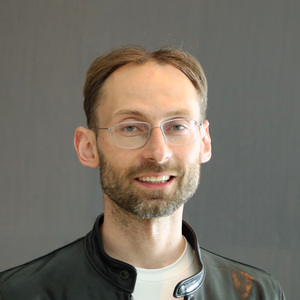
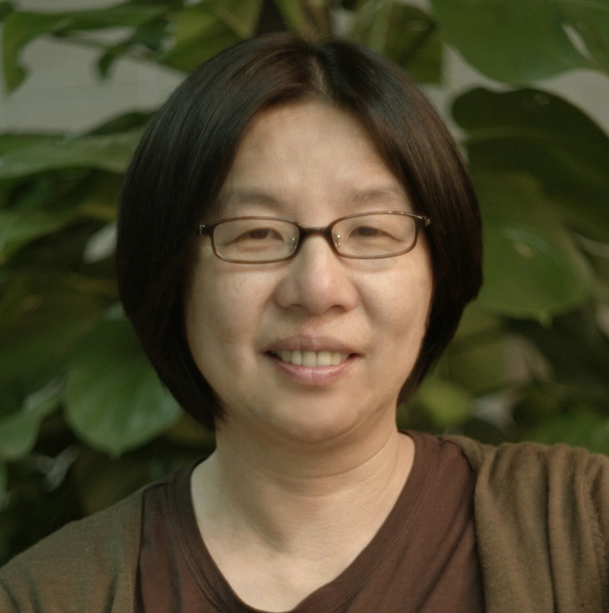

- Decision is out✨
- Camera-ready deadline: July 21th, 2023
- Workshop time: Saturday, July 29th, 2023
- Location: Hawaii Convention Center (Room 314), Honolulu, Hawai'i, USA
Call for submissions
We invite extended abstracts dealing with novel algorithms and computational approaches that are robust,
scalable to high-dimensional data, and provide interpretable models of biological systems. These can be applications of ML methods or
bioinformatics approaches to biological and biomedical data or novel approaches that enable new analyses. Papers will be presented in poster
format and some will be selected for oral presentation (contributed and spotlight talks).
Through invited talks and presentations by the participants, this workshop will bring together current advances in Computational Biology and set
the stage for continuing interdisciplinary research discussions.
Submission
All novel Computational Biology approaches are of interest to the workshop.
In addition to the main track, we will hold a special track on “Explainability in Biological data” which will feature submissions focused on interpretable ML approaches and their applications for biological data. This will include inherently explainable and interpretable ML approaches, post-hoc interpretations of existing models, ways to evaluate the quality of explanations, limitations and failure modes of existing methods, and visualization strategies for analyzing models.
We welcome original abstracts on preliminary ideas and findings in the following format:
- Extended abstract not exceeding 4 pages in length (plus optional pages for references). Appendices are allowed but not guaranteed to be reviewed.
Submissions should be made through the Microsoft CMT submission portal. For more information about the submission process using CMT, please check this HOW-TO.
Accepted submissions will have the option of being published on the workshop website.For authors who do not wish their papers to be posted online or become citable, please mention this in the workshop submission.
This year, all presenters must attend in person.
Poster
This year we only do in-person poster presentation. The size for poster is recommended to be portrait orientation and up to 24"w x 36"h.
Schedule
* Times below are in HST (GMT-10)
| 9:00 - 9:05AM | Opening Remarks | ||
| Session 1 (Chair: Cameron Park) | |||
| 9:05 - 9:40AM | Michael Bronstein | ||
| Geometric ML for designing new molecules | |||
| 9:40 - 10:00AM | William Beardall | ||
| Genomic Interpreter: A Hierarchical Genomic Deep Neural Network with 1D Shifted Window Transformer | [Paper] | ||
| 10:00 - 10:15AM | Spotlight talks | ||
| Claudia Skok Gibbs - A Variational Inference Approach to Single-Cell Gene Regulatory Network Inference using Probabilistic Matrix Factorization | |||
| Eric D Sun - Graph reinforcement and smoothing for improved spatial gene expression prediction | |||
| Jos Torge - DiffHopp: A Graph Diffusion Model for Novel Drug Design via Scaffold Hopping | [Paper] | ||
| 10:15 - 10:45AM | Coffee break | ||
| Session 2 (Chair: Lingting Shi) | |||
| 10:45 - 11:05AM | Rui Yang | ||
| HiC2Self: Self-supervised Hi-C contact map denoising | [Paper] | ||
| 11:05 - 11:25AM | Sukwon Yun | ||
| Single-cell RNA-seq data imputation using Feature Propagation | [Paper] | ||
| 11:25 - 11:50AM | Spotlight talks | ||
| Kristina Ulicna - Learning dynamic image representations for self-supervised cell cycle annotation | [Paper] | ||
| Nhat Khang Ngo - Multiresolution Graph Transformers and Wavelet Positional Encoding for Learning Hierarchical Structures | [Paper] | ||
| Cuong Q Nguyen - Molecule-Morphology Contrastive Pretraining for Transferable Molecular Representation | [Paper] | ||
| Kavi Gupta - Improved modeling of RNA-binding protein motifs in an interpretable neural model of RNA splicing | |||
| Simon V Mathis - Normal Mode Diffusion: Towards Dynamics-informed Protein Design | [Paper] | ||
| 11:50 - 12:50PM | Poster session 1 | ||
| 12:50 - 1:30PM | Lunch break | ||
| Session 3 (Chair: Bianca M. Dumitrascu) | |||
| 1:30 - 2:05PM | Bin Yu | ||
| Veridical data science for reliable, reproducible, and transparent data analysis and decision-making | |||
| 2:05 - 2:25PM | Spotlight talks | ||
| Zhongliang Zhou - Explaining the blackbox: Unraveling Protein Language Model's Learning Mechanisms for Kinase-Specific Phosphorylation Prediction | |||
| Jun Xia - Why Deep Models Often Cannot Beat Non-deep Counterparts on Molecular Property Prediction? | |||
| Alex M Tseng - Hierarchically branched diffusion models for scientific discovery | [Paper] | ||
| Kemal Inecik - scARE: Attribution Regularization for Single Cell Representation Learning | [Paper] | ||
| 2:25 - 3:00PM | Invited talk: Su-In Lee | ||
| 3:00 - 4:00PM | Poster session 2 | ||
| 4:05 - 4:15PM | Award ceremony and concluding remarks | ||
Invited speakers
*Listed alphabetically

Michael Bronstein
DeepMind Professor of Artificial Intelligence
Department of Computer Science
University of Oxford
Su-In Lee
Professor
Paul G. Allen School of Computer Science
University of Washington, Seattle

Bin Yu
Chancellor's Distinguished Professor
Department of Statistics & EECS
UC Berkeley
Diversity and Inclusion
ICML Workshop on Computational Biology aims to foster an inclusive and welcoming community.
If you have any questions, comments, or concerns, please reach out to workshopcompbio@gmail.com.
We are also featuring other workshops that you might find helpful for diversity and inclusion.
Queer in AI
Accepted Submissions
Contributed talks
- Zehui Li (Imperial College London); Akashaditya Das (Imperial College London); William Beardall (Imperial College London); Yiren Zhao (University of Cambridge); Guy-Bart Stan (Imperial College London) Genomic Interpreter: A Hierarchical Genomic Deep Neural Network with 1D Shifted Window Transformer [paper]
- Rui Yang (MSKCC); Alireza Karbalayghareh (MSKCC); Christina Leslie (MSKCC) HiC2Self: Self-supervised Hi-C contact map denoising [paper]
- Sukwon Yun (KAIST); Junseok Lee (KAIST); Chanyoung Park (KAIST) Single-cell RNA-seq data imputation using Feature Propagation [paper]
- Matthew R. Masters (University of Basel); Amr H. Mahmoud (University of Basel); Markus A. Lill (University of Basel) FusionDock: Physics-informed Diffusion Model for Molecular Docking [paper]
Poster session 1
- Forough Habibollahi (Cortical Labs); Moein Khajehnejad (Monash University); Amitesh Gaurav (Cortical Labs); Brett J. Kagan (Cortical Labs) Biological Neurons vs Deep Reinforcement Learning: Sample efficiency in a simulated game-world. [paper]
- Bongjin Koo (UCSB); Julien N. P. Martel (Stanford University); Ariana Peck (SLAC National Accelerator Laboratory); Axel Levy (Stanford University); Frederic Poitevin (SLAC National Accelerator Laboratory); Nina Miolane (UCSB) CryoChains: Heterogeneous Reconstruction of Molecular Assembly of Semi-flexible Chains from Cryo-EM Images [paper]
- Pierre-Aurelien Gilliot (University of Bristol); Thomas E Gorochowski (University of Bristol) Come with the Sequence, Stay for the Structure: RNA Conformational Learning to Predict Protein Expression
- Yongjian Yang (Texas A&M University); Yu-Te Lin (National Taiwan University); Guanxun Li (Texas A&M University); Yan Zhong (East China Normal University); Qian Xu (Texas A&M University); James J Cai (Texas A&M University) Interpretable modeling of time-resolved single-cell gene-protein expression using CrossmodalNet
- Achille Nazaret (Columbia University); Justin J Hong (Columbia University); Elham Azizi (Columbia University); David Blei (Columbia University) Sparse Causal Discovery for Scalable Gene Regulatory Network Inference
- Daisy Yi Ding (Stanford University); Yuhui Zhang (Stanford University); Yuan Jia (Stanford University); Jiuzhi Sun (Stanford University) Machine Learning-guided Lipid Nanoparticle Design for mRNA Delivery [paper]
- Yanis Tazi (Tri-I PhD Program: Cornell, Rockefeller, MSKCC); Michael Berger (The Rockefeller University); Winrich Freiwald (The Rockefeller University) Emergence of Interpretable Functional Specialization in Neural Networks Trained on Facial Expression and Identity Recognition [paper]
- Frederic Runge (University of Freiburg); Jörg K.H. Franke (University of Freiburg); Frank Hutter (University of Freiburg) Towards Automated Design of Riboswitches [paper]
- Chaitanya K Joshi (University of Cambridge); Arian R. Jamasb (University of Cambridge); Ramon Viñas Torné (University of Cambridge); Charles Harris (University of Cambridge); Simon V Mathis (University of Cambridge); Pietro Lió (University of Cambridge) Multi-State RNA Design with Geometric Multi-Graph Neural Networks [paper]
- Kaiyu Li (University College London); Zhuo Sun (University College London) Multilevel Control Functional [paper]
- Gurdip S Uppal (Brigham and Women's Hospital / Harvard Medical School); Georg K Gerber (Harvard Medical School) MC-SPACE: Microbial communities from spatially associated counts engine [paper]
- Taedong Yun (Google Research) Evaluating unsupervised disentangled representation learning for genomic discovery and disease risk prediction [paper]
- Frédéric A. Dreyer (Exscientia), Daniel Cutting (Exscientia), Constantin Schneider (Exscientia), Henry Kenlay (Exscientia), Charlotte M. Deane (Exscientia) Inverse folding for antibody sequence design using deep learning [paper]
- Mine Öğretir (Aalto University); Harri Lähdesmäki (Aalto University); Jamie Morton (Integrated Omics AI) Longitudinal Variational Autoencoder for Compositional Data Analysis [paper]
- Natasa Tagasovska (Prescient Design, Genentech); Ji Won Park (Prescient Design, Genentech/Roche); Michael Maser (Prescient Design, Genentech); Stephen Ra (Prescient Design, Genentech); Kyunghyun Cho (New York University) BOtied: Multi-objective Bayesian optimization with tied multivariate ranks [paper]
- Jing Gong (Biomap); MInsheng Hao (Tsinghua University); Xin Zeng (Biomap); Chiming Liu (Biomap); Taifeng Wang (Biomap); Jianzhu Ma (Tsinghua University); Xuegong Zhang (Tsinghua University); xingyi cheng (biomap); Le Song (Biomap & MBZUAI) xTrimoGene: An Efficient and Scalable Representation Learner for Single-Cell RNA-Seq Data [paper]
- Alexandru Dumitrescu (Aalto University); Emmi Jokinen (University of Helsinki); Dani Korpela (Aalto University); Harri Lähdesmäki (Aalto University) Structure-guided T cell receptor and epitope interaction prediction [paper]
- Gal Keinan (GSK); Karen Sayal (GSK.ai); Alon Gonen (GSK); Jiang Zhu (GSK); Lena Granovsky (GSK); Jeremy L England (GSK) Learning Perturbation-specific Cell Representations for Prediction of Transcriptional Response across Cellular Contexts [paper]
- Divya Koyyalagunta (MSKCC); Quaid Morris (MSKCC), Vector Institute, University of Toronto) Gradient-based Migration History Inference of Metastatic Cancers
- Mingxuan Zhang (Columbia University); Kevin Hoffer-Hawlik (Columbia University); Benjamin Izar (Columbia University Medical Center); Elham Azizi (Columbia University) SBGGeHPF: Stochastic Block Graph Generative Hierarchical Poisson Factorization
- Antonia Boca (University of Cambridge); Simon V Mathis (University of Cambridge) Predicting protein variants with equivariant graph neural networks [paper]
- Yunha Hwang (Harvard); Andre Cornman (N/A); Elizabeth Kellogg (Cornell); Sergey Ovchinnikov (Harvard); Peter Girguis (Harvard) Genomic language model predicts protein co-regulation and function
- Ioana Lia (Columbia University); Mathini Vaikunthan (Columbia University); Andrew Redenti (Columbia University); Jongwon Im (Columbia University); Tal Danino (Columbia University); José L. McFaline-Figueroa (Columbia University); Elham Azizi (Columbia University) BacTIME: Computational inference of bacterial interactions with the tumor microenvironment [paper]
- Ron Boger (UC Berkeley); Seyone Chithrananda (UC Berkeley); Amy X Lu (UC Berkeley) TOPH (True Retrieval of Proteins Homologs): Adapting A Contrastive Question-Answering Framework for Protein Search [paper]
- Dennis Tang (Duke University); Jian Zhou (UT Southwestern) Accelerating Systematic Prediction of Variant Effects and Sequence Interpretation with Multiplexer Models [paper]
- Michael Brocidiacono (UNC); David Koes (University of Pittsburgh); Alexander Tropsha (UNC); Konstantin Popov (UNC) PLANTAIN: Using an AI pose scoring function for fast and accurate molecular docking [paper]
- Claudia Skok Gibbs (New York University); Omar Mahmood (New York University); Richard Bonneau (New York University); Kyunghyun Cho (New York University) A Variational Inference Approach to Single-Cell Gene Regulatory Network Inference using Probabilistic Matrix Factorization
- Eric D Sun (Stanford University); Rong Ma (Stanford University); James Zou (Stanford University) Graph reinforcement and smoothing for improved spatial gene expression prediction
- Jos Torge (University of Cambridge); Charles Harris (University of Cambridge); Simon V Mathis (University of Cambridge); Pietro Lió (University of Cambridge) DiffHopp: A Graph Diffusion Model for Novel Drug Design via Scaffold Hopping [paper]
- Rui Yang (MSKCC); Alireza Karbalayghareh (MSKCC); Christina Leslie (MSKCC) HiC2Self: Self-supervised Hi-C contact map denoising [paper]
- Tony Tu (Georgia Tech); Gautham Krishna Sankar Ramalaxmi (Georgia Tech); Amirali Aghazadeh (Georgia Tech) ProtiGeno: a prokaryotic short gene finder using protein language models [paper]
- Colin Grambow (Genentech Research and Early Development); Hayley Weir (Genentech Research and Early Development); Nathaniel Diamant (Genentech Research and Early Development); Alex M Tseng (Genentech); Tommaso Biancalani (Genentech Research and Early Development); Gabriele Scalia (Genentech); Kangway V Chuang (Genentech Research and Early Development) RINGER: Rapid Conformer Generation for Macrocycles with Sequence-Conditioned Internal Coordinate Diffusion
- Xuezhi Xie (University of Toronto); Jin Sub Lee (University of Toronto); Dongki Kim (KAIST); Jaehyeong Jo (KAIST); Jisun Kim (University of Toronto); Philip Kim (University of Toronto) Antibody-SGM: Antigen-Specific Joint Design of Antibody Sequence and Structure using Diffusion Models [paper]
Poster session 2
- Jörg K.H. Franke (University of Freiburg); Frederic Runge (University of Freiburg); Frank Hutter (University of Freiburg) Scalable Deep Learning for RNA Secondary Structure Prediction [paper]
- Talal Widatalla (Merck & Co Inc); Zachary A Rollins (Merck & Co Inc); Alan Cheng (Merck & Co Inc); Andrew Waight (Merck & Co Inc); Ming-Tang Chen (Merck & Co Inc) AbPROP: Language and Graph Deep Learning for Antibody Property Prediction [paper]
- Georg K Gerber (Harvard Medical School); Michael Glickman (Weill Cornell Medicine); Vanni Bucci (U Mass Medical School) Discovery of Host-Microbiome Interactions Using Multi-Modal, Sparse, Time-Aware, Bayesian Network-Structured Neural Topic Models [paper]
- Joshua Southern (Imperial College London); Arne Schneuing (EPFL); Michael Bronstein (University of Oxford); Bruno Correia (EPFL) Evaluation Metrics for Protein Structure Generation [paper]
- Lovro Vrček (Genome Institute of Singapore, A*STAR); Xavier Bresson (National University of Singapore); Thomas Laurent (Loyola Marymount University); Martin Schmitz (A*Star/NUS); Mile Sikic (Genome Institute of Singapore) Untangling Genome Assembly Graphs with Graph Neural Networks
- Ramon Viñas Torné (University of Cambridge); Paul M Scherer (University of Cambridge); Nikola Simidjievski (University of Cambridge ); Mateja Jamnik (University of Cambridge); Pietro Lió (University of Cambridge) Spatio-relational inductive biases in spatial cell-type deconvolution [paper]
- Lingting Shi (Columbia University); Michael Pressler (Columbia University); Xumin Shen (Columbia University); Joshua S Fuller (Columbia University ); Achille O R Nazaret (Columbia University); Joy Fan (Columbia University); Ajna Uzuni (Columbia University); Ximi Wang (Columbia University); David Harle (Columbia University); Ran Reshef (Columbia University); Elham Azizi (Columbia University) Characterizing the temporal evolution of alloreactive T cell clonotypes using probabilistic basis decomposition
- Dobrik G. Georgiev (University of Cambridge); Ramon Viñas Torné (University of Cambridge); Sam Considine (University of Cambridge); Bianca M Dumitrascu (Princeton University); Pietro Lió (University of Cambridge) NARTI: Neural Algorithmic Reasoning for Trajectory Inference [paper]
- Andre Lamurias (NOVA LINCS, NOVA School of Science and Technology); Alessandro Tibo (Aalborg University); Katja Hose (TU Wien); Mads Albertsen (Aalborg University); Thomas Dyhre Nielsen (Aalborg University) Graph Neural Networks for Metagenomic Binning [paper]
- Ziqi Tang (Cold Spring Harbor Laboratory); Peter K. Koo (Cold Spring Harbor Laboratory) Building foundation models for regulatory genomics requires rethinking large language models [paper]
- Philip Fradkin (Vector Institute); Leo J Lee (University of Toronto); Bo Wang (Vector Institute); Brendan Frey (U. Toronto) Splicing Up Your Predictions with RNA Contrastive Learning
- Justin S Diamond (University of Basel) Geometric Constraints from Molecular Dynamics to Graph Generative Modelling [paper]
- Dylan Domenico (MSKCC); Georgios Asimomitis (MSKCC, National Technical University of Athens); Gunes Gundem (MSKCC); Emily Stockfisch (MSKCC); Cassidy Cobbs (MSKCC); Neeman Mohibullah (MSKCC); Leonidas Alexopoulos (National Technical University of Athens); Neerav Shukla (MSKCC); Andrew Kung (MSKCC); Elli Papaemmanuil (MSKCC) High-Resolution Interpretable Classification of Artifacts versus Real Variants in Whole Genome Sequencing Data from Archived Tissue [paper]
- Daniel McNeela (University of Wisconsin, Madison); Frederic Sala (University of Wisconsin-Madison); Anthony Gitter (University of Wisconsin, Madison) Mixed Curvature Representation Learning for Biological Pathway Graphs [paper]
- Micaela E Consens (University of Toronto); Alan Moses (University of Toronto); Bo Wang (Vector Institute); Nicholas Papernot (University of Toronto) Transforming Genomic Interpretability: A DNABERT Case Study [paper]
- Delaram Pir Hayatifard (Rice University); Elizabeth Hanson (Baylor College of Medicine ); Paul Pfaffinger (Baylor College of Medicine); Benjamin Arenkiel (Baylor College of Medicine); Jacob Reimer (Baylor College of Medicine); Saket Navlakha (Cold Spring Harbor Laboratory); Anki Patel (Rice University) Dense Odor Coding in the Mouse Olfactory Bulb [paper]
- Martin Rohbeck (DKFZ); Arber Qoku (DKFZ); Tim Treis (DKFZ); Fabian J Theis (Institute of Computational Biology, Helmholtz Center); Britta Velten (Heidelberg University); Florian Buettner (DKFZ); Oliver Stegle (DKFZ) Cellij: A Modular Factor Model Framework for Interpretable and Accelerated Multi-Omics Data Integration [paper]
- Osama Abdin (University of Toronto); Philip Kim (University of Toronto) Hypernetwork-conditioned diffusion enables all-atom peptide conformational sampling
- Sepideh Maleki (Genentech Research and Early Development); Ehsan Hajiramezalani (Genentech Research and Early Development); Gabriele Scalia (Genentech); Tommaso Biancalani (Genentech Research and Early Development); Kangway V Chuang (Genentech Research and Early Development) Learning to Explain Hypergraph Neural Networks
- Junseok Lee (KAIST); Sungwon Kim (KAIST); Dongmin Hyun (POSTECH); Namkyeong Lee (Korea Advanced Institute of Science and Technology); Yejin Kim (University of Texas Health Science Center at Houston); Chanyoung Park (KAIST) Deep single-cell RNA-seq data clustering with graph prototypical contrastive learning [paper]
- Romain Lacombe (Stanford University); Andrew Gaut (Stanford University) Extracting Molecular Properties from Natural Language with Multimodal Contrastive Learning [paper]
- Wenliang Zhong (University of Texas at Arlington); Hehuan Ma (University of Texas at Arlington); Yu Rong (Tencent AI Lab); Yatao Bian (Tencent AI Lab); Long-Kai Huang (Tencent AI Lab); Yuzhi Guo (University of Texas at Arlington); Peilin Zhao (Tencent AI Lab); Junzhou Huang (University of Texas at Arlington) CoSSL: A Context-based Semi-Supervised Framework for Molecular Property Prediction
- Core Francisco Park (Harvard University); Pavel Potocek (Thermo Fisher Scientific); Shashata Sawmya (MIT); Yicong Li (Harvard University); Richard Schalek (Harvard University); Jeff Lichtman (Harvard University); Maurice Peemen (Thermo Fisher Scientific); Aravinthan Samuel (Harvard); Nir Shavit (Massachusetts Institute of Technology); Yaron Meirovitch (Harvard; MIT) SmartEM: Faster Connectomics Using Deep Error Prediction Based Rescanning
- Joowon Lee (University of Wisconsin-Madison); Hanbaek Lyu (UW-Madison); Weixin Yao (University of California-Riverside) Interpretable Feature Extraction by Supervised Dictionary Learning for Identification of Cancer-Associated Gene Clusters [paper]
- Kristina Ulicna (The Alan Turing Institute); Manasi Kelkar (University College London (UCL)); Christopher J Soelistyo (The Alan Turing Institute); Guillaume Charras (University College London (UCL)); Alan R Lowe (University College London) Learning dynamic image representations for self-supervised cell cycle annotation [paper]
- Khang Nhat Ngo (FPT Software AI Center); Truong Son Hy (University of Chicago); Risi Kondor (The University of Chicago) Multiresolution Graph Transformers and Wavelet Positional Encoding for Learning Hierarchical Structures [paper]
- Cuong Q Nguyen (GSK); Dante Pertusi (GSK); Kim M Branson (GSK) Molecule-Morphology Contrastive Pretraining for Transferable Molecular Representation [paper]
- Kavi Gupta (MIT); Chenxi Yang (UT Austin); Kayla McCue (MIT); Osbert Bastani (University of Pennsylvania); Phillip Sharp (MIT); Christopher Burge (MIT); Armando Solar-Lezama (MIT) Improved modeling of RNA-binding protein motifs in an interpretable neural model of RNA splicing
- Urszula Julia Komorowska (University of Cambridge); Simon V Mathis (University of Cambridge); Mateja Jamnik (University of Cambridge); Pietro Lió (University of Cambridge) Normal Mode Diffusion: Towards Dynamics-informed Protein Design [paper]
- Zhongliang Zhou (University of Georgia); Wayland Yeung (University of Georgia); Saber Soleymani (University of Georgia); Nathan Gravel (University of Georgia); Mariah Salcedo (University of Georgia); Sheng Li (University of Virginia); Natarajan Kannan (University of Georgia) Explaining the blackbox - Unraveling Protein Language Model's Learning Mechanisms for Kinase-Specific Phosphorylation Prediction
- Jun Xia (Westlake University); Lecheng Zhang (Westlake University); Xiao Zhu (Beijing University of Posts and Telecommunications); Stan Z. Li (Westlake University) Why Deep Models Often Cannot Beat Non-deep Counterparts on Molecular Property Prediction?
- Alex M Tseng (Genentech); Max Shen (Genentech); Tommaso Biancalani (Genentech); Gabriele Scalia (Genentech) Hierarchically branched diffusion models for scientific discovery [paper]
- Kemal Inecik (Institute of Computational Biology, Helmholtz Center); Fabian J Theis (Institute of Computational Biology, Helmholtz Center) scARE: Attribution Regularization for Single Cell Representation Learning [paper]
Steering committee
Dana Pe’er (mskcc.org/research/ski/labs/dana-pe-er)
Debora Marks (https://www.deboramarkslab.com/)
Alexander Anderson (labpages.moffitt.org/andersona/)
Elham Azizi (https://www.azizilab.com/ )
Sandhya Prabhakaran (sandhyaprabhakaran.com)
Abdoulaye Baniré Diallo (labo.bioinfo.uqam.ca )
Wesley Tansey (http://wesleytansey.com)
Bianca Dumitrascu (https://computational-morphogenomics-group.github.io)
Maria Brbic (https://brbiclab.epfl.ch/)
Organizing committee
Yubin Xie: yux2009@med.cornell.edu
Cassandra Burdziak: burdziac@mskcc.org
Mafalda Dias: mafalda.dias@crg.eu
Cameron Park: cyp2111@columbia.edu
Pascal Notin: pascal.notin@cs.ox.ac.uk
Joy Fan: lf2684@columbia.edu
Ruben Weizman: rubenweitzman@gmail.com
Lingting Shi: ls3456@columbia.edu
Siyu He: sh3846@columbia.edu
Yinuo Jin: yj2589@columbia.edu
Program Committee
Achille Nazaret, Columbia University
Adam Gayoso, UC Berkeley
Adrian Heilbut, logphase research
Ahmed Halioui, Mt Intelligent Machines
Ahmet Coskun, Georgia Tech
Alice Bizeul, ETHZ
Alyssa Morrow, UC Berkeley
Amine Remita, Université du Québec à Montréal
Amy Xie, Memorial Sloan Kettering Cancer Center
Anastasiya Belyaeva, Google Research
Arnav Das, University of Washington
Ayshwarya Subramanian, Broad Institute
Behrooz Tahmasebi, MIT
Benjamin Gallusser, EPFL
Benjamin Wesley, Columbia University
Bianca Dumitrascu, Columbia University
Bishnu Sarker, Inria
Bo Yuan, Harvard University
Brian Trippe, Columbia University
Cameron Park, Columbia University
Cassandra Burdziak, Memorial Sloan Kettering Cancer Center
Chandana Rajesh, Cold Spring Harbor Laboratory
Charles Harris, University of Cambridge
Chenlian Fu, Memorial Sloan Kettering Cancer Center
Chetanya Pandya, 2seventy bio
Christopher Garay, Paradigm4
Dana Pe'er, Memorial Sloan Kettering Cancer Center
Debora Marks, Harvard University
Delasa Aghamirzaie, Natera
Ece Ozkan, MIT
Ehsan Hajiramezanali, Genentech
Elham Azizi, Columbia University
Elior Rahmani, UCLA
Engelbert Mephu Nguifo, Université Clermont Auvergne, CNRS, LIMOS
Evan Seitz, Cold Spring Harbor Laboratory
Eyal Itskovits, GSK.ai
Fabian Theis, Helmholtz Zentrum München
Filippo Utro, IBM THOMAS J. WATSON RESEARCH CENTER
Freddie Bickford Smith, University of Oxford
Gabriele Scalia, Genentech
Han Spinner, Harvard
Hayda Almeida, UQAM
Ignacio Vazquez-Garcia, Memorial Sloan Kettering Cancer Center / Columbia University
Ilyes Baali, Memorial Sloan Kettering Cancer Center
Jan Brauner, University of Oxford
Jason Dou, University of Pittsburgh
Jessica White, Memorial Sloan Kettering Cancer Center
Jill Gallaher, Moffitt Cancer Center
Joy Fan, Columbia University
Justin Hong, Columbia University
Kangway Chuang, Genentech Research and Early Development
Kevin Hoffer-Hawlik, Columbia University
Keyur Shah, Massachusetts General Hospital
Khanh Dinh, Columbia University
Kyle Swanson, Stanford University
Lea Goetz, GSK.ai
Lei Xiong, MIT
Lingting Shi, Columbia University
Lingyi Cai, Columbia University
Lood van Niekerk, Harvard Medical School
Luis Rueda, University of Windsor
Manu Setty, SKI
Maria Brbic, Stanford University
Mario Wieser, Genedata AG
Matthew Peterson, Paradigm4
Mervin Fansler, Memorial Sloan Kettering Cancer Center
Mingxuan Zhang, Columbia University
Mohammad Lotfollahi, Helmholtz Zentrum München
Mostafa Karimi, Amazon
Namkyeong Lee, Korea Advanced Institute of Science and Technology
Nathan Rollins, Seismic Therapeutic
Nazim Bouatta, Harvard University
Nicolas Beltran, Columbia University
Petko Fiziev, Illumina, Inc
Philip Fradkin, Vector Institute
Pierre Boyeau, UC Berkeley
Pooja Kathail, UC Berkeley
Ragothaman Yennamalli, SASTRA Deemed University
Ričards Marcinkevičs, ETH Zurich
Rishabh Anand National, University of Singapore
Romain Lopez, Genentech and Stanford
Rui Yang, Memorial Sloan Kettering Cancer Center
Russell Kunes, Columbia University
Sabeur Aridhi, LORIA
Sairam Behera, Baylor College of Medicine
Sandhya Prabhakaran, Moffitt Cancer Center
Sepideh Maleki, Genentech
Sheng Liu, Indiana University School of Medicine
Shiyi Yang, UC Berkeley
Shouvik Mani, Columbia University
Shreshth Malik, University of Oxford
Shuhao Zhang, EPFL
Simon Mathis, University of Cambridge
Siyu He, Columbia University
Smita Krishnaswamy, Yale University
Somesh Mohapatra, Caterpillar Inc
Soufiane Mourragui, Hubrecht Institute
Soumya Kundu, Stanford University
Srivamshi Pittala, Katana Graph Inc
Stephen Zhang, University of Melbourne
Surag Nair, Stanford University
Talip Ucar, AstraZeneca
Tianming Zhou, Carnegie Mellon University
Umberto Lupo, EPFL
Victor Greiff, University of Oslo
Warith Eddine, DJEDDI FST Manar
Xiang Niu, Memorial Sloan Kettering Cancer Center
Xue Long Zhao, University of Pennsylvania
Xuecong Fu, Carnegie Mellon University
Yanay Rosen, Stanford University
Yinuo Jin, Columbia University
Yongju Lee, Genentech
Yubin Xie, Memorial Sloan Kettering Cancer Center
Yue Wu, Stanford University
Ziqi Tang, Cold Spring Harbor Laboratory
Sponsors
Previous workshops
- ICML 2022 Workshop on Computational Biology
- ICML 2021 Workshop on Computational Biology
- ICML 2020 Workshop on Computational Biology
- ICML 2019 Workshop on Computational Biology
- Joint ICML and IJCAI 2018 Workshop on Computational Biology
- ICML 2017 Workshop on Computational Biology
- ICML 2016 Workshop on Computational Biology